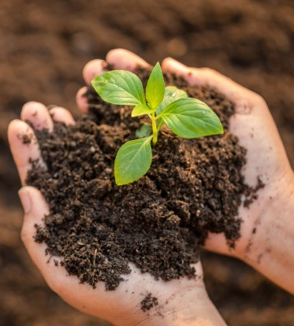

Compost Cam
Thermometer
Composters
Outdoor
Indoor
Compost detector AI cammara
Start

How it works?
Click the star button and wait for the camara to show.
Once the camara appearss show a picture of you're compost
Now wait until it detected the c=status of the compost.
Once it detects it a somthing should pop out saying the status of it.